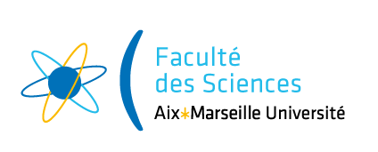

Retour vers la page d'accueil
Liste des intervenants
Liste des unites
Les masters de Luminy
Liste des intervenants :
Rémi Morin
Frederic BECHET
Carlos Ramisch
Nadia CREIGNOU
Noel NOVELLI
Jean Luc MASSAT
Claude SABATIER
Pablo Arrighi
Kevin Perrot
Victor Chepoi
Emmanuel GODARD
Peter Niebert
Luigi Santocanale
Liste des parcours :
Tronc commun
Intégration de systèmes logiciels
Liste des unités :
Génie Logiciel
Complexité
Réseaux
Programmation fonctionnelle
BDR : approfondissement
Programmation logique
Outils de l'internet
Système embarqué
Fondamentaux pour l'ingénierie des langues
Modèles à évènements discrets
Pratique de la cryptographie
Anglais
Communication
XML
Algorithme et recherche opérationelle
Programmation parallèle
Projet
Stage de deux moins
Sémantique
Algorithme distribuée
Intégration des systèmes d'information
Initiation à la fouille de données et à l'optimisation des SGBD
Intelligence artificielle
Algorithme à performance garantie
Introduction à l'apprentissage automatique
Fiabilité logicielle 1
Plateforme JEE
Méthodes de développement
Projet industriel de mise en application
Stage en entreprise
Liste des unités à 3 crédits se déroulant à Luminy :
Programmation fonctionnelle
BDR : approfondissement
Programmation logique
Outils de l'internet
Système embarqué
Fondamentaux pour l'ingénierie des langues
Modèles à évènements discrets
Pratique de la cryptographie
Anglais
Communication
XML
Algorithme et recherche opérationelle
Programmation parallèle
Sémantique
Algorithme distribuée
Intégration des systèmes d'information
Initiation à la fouille de données et à l'optimisation des SGBD
Intelligence artificielle
Algorithme à performance garantie
Introduction à l'apprentissage automatique
Fiabilité logicielle 1
Plateforme JEE
Méthodes de développement
Liste des intervenants enseignant qu'à Luminy :
arrighi
perrot
perrot
creignou
godard
santocanale
sabatier
novelli
niebert
bechet
ramisch
morin
massat
chepoi
morin
novelli